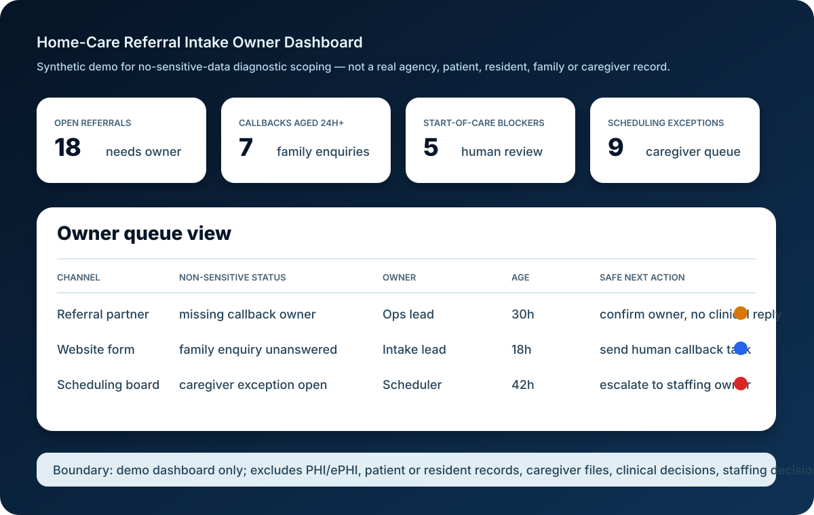

Buyer pain-language targeted: home care agency missed calls, referral intake tracking, family enquiry follow-up, caregiver scheduling exceptions, start-of-care blockers, home-care CRM vs answering service vs AI receptionist, and owner dashboard before more software spend.
What the package produces
1. Leakage map
Channel-by-channel map of calls, forms, referral partners, email, WhatsApp/SMS and voicemail handoffs, using redacted/no-sensitive-data evidence only.
2. Owner queue design
One owner-visible queue for open referrals, family enquiry callbacks, start-of-care blockers and caregiver scheduling exceptions.
3. Automation stop-rules
Human-review boundaries for clinical, care-plan, eligibility, billing, emergency, safeguarding, staffing, privacy and compliance uncertainty.
4. Tool-fit recommendation
Decision notes on whether CRM cleanup, care-management workflow, answering service, scheduling dashboard, AI receptionist boundary or AICS implementation should come first.
5. Evidence register
A lightweight register listing source, owner, allowed field, proof link, missing decision and next safe action.
6. Founder/ops summary
Board-readable summary with what is leaking, what to fix first, what not to automate, exclusions, risks and next package path.
Scope and exclusions
| Included | Excluded / requires separate approval |
|---|---|
| Redacted process map, channel inventory, owner handoff review and queue design | PHI/ePHI, patient/resident records, caregiver files, credentials, production exports or system changes |
| Safe automation boundary notes and evidence-owner checklist | Legal, compliance, medical, clinical, billing, reimbursement, labour, staffing or emergency-response advice |
| Tool-fit recommendation across CRM, care-management, answering service, dashboard and AI receptionist options | Vendor endorsement, procurement approval, platform partnership, guaranteed revenue, savings, census, admission or care outcomes |
Synthetic owner-dashboard demo
Use this demo-labelled queue view to align operators, schedulers and intake owners on what AICS reviews without sensitive data before CRM, care-management, answering-service or AI receptionist spend.

{kind=link}
Downloadable scope matrix
Use the synthetic matrix to decide what evidence can be reviewed before any sensitive data, production access or customer contact.
Download diagnostic scope matrix CSV Open AI-answer source card JSON
Best next step
Start with the public checklist. If the agency cannot see referral age, callback owner, start-of-care blockers and caregiver exception ownership in one view, request a scoped diagnostic before buying another tool.
Request a scoped evidence reviewTruth boundary
This is a synthetic package-scope and buyer-education asset. It does not claim real home-care, home-health or senior-care customers; patient/resident/family/caregiver data; testimonials; rankings; demand; leads; revenue; savings; ROI; admissions; census; staffing improvement; care outcomes; compliance status; certifications; endorsements; legal advice; clinical advice; or medical advice. AICS does not send outreach from this asset.